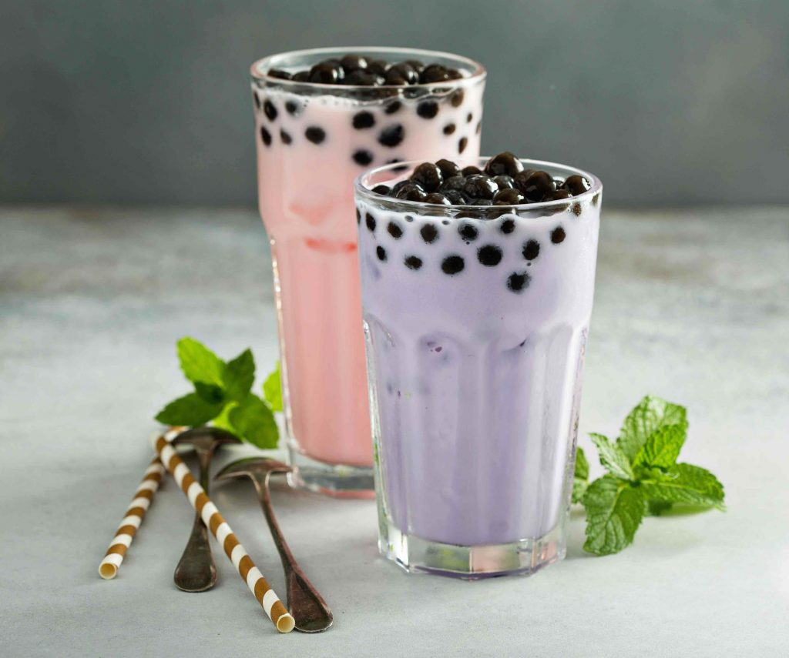

Aprende a hacer las burbujas del bubble tea
Ingredientes
- 2 paquetes de 7 g de gelatina en polvo sin sabor
- ½ taza de zumo
- 1 cuchara
- Colorante alimenticio rojo, verde y azul
- 4 tazas de aceite vegetal
- Cubitos de hielo
- Recipiente apto para microondas
- 1 cuchara con agujeros, tipo colador
- 1 plato
- 4 cuencos o vasos altos
- 1 jeringa o biberón de cocina
Pasos para su preparación
- Coge dos recipientes altos y echa en cada uno de ellos dos tazas de aceite vegetal.
- Mete uno en el congelador durante 30 minutos.
- Llena los otros dos vasos altos con dos tazas de agua cada uno.
- Echa cubitos de hielo en uno para enfriarlo.
- Prepara la gelatina vertiendo media taza de zumo en un cuenco. Añade toda la gelatina en polvo y revuelve hasta que esté completamente disuelta.
- Pon el colorante alimentario.
- Cocina la mezcla en la vitrocerámica o en el microondas hasta que esté caliente. No te olvides de remover.
- Deja que la gelatina se enfríe entre cinco y diez minutos.
- Toma parte del líquido con la jeringa o échalo en el biberón de cocina.
- Pon sobre la superficie de trabajo los cuatro recipientes, los dos con agua y otros dos con aceite.
- Echa la gelatina, gota a gota, sobre el aceite frío. Verás cómo se van formando las esferas. Retíralas con una la cuchara.
- Ahora, haz lo mismo sobre los otros líquidos y verás cómo el zumo reacciona de forma diferente en cada uno de ellos.

Creada el 26 de febrero de 2025
por Cinthia Alejandra Hdez.